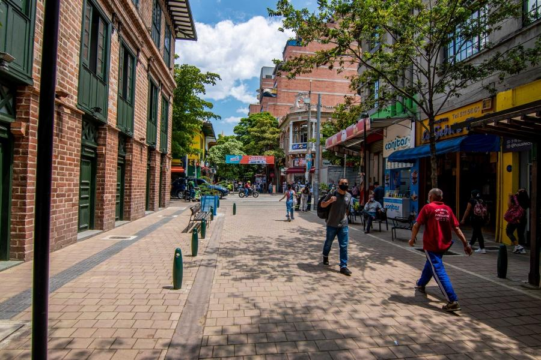

Cuida tus pertenencias
Evita mostrar objetos de valor en lugares muy concurridos y mantén tus pertenencias bajo control.
Adoptar algunos hábitos de prevención puede ayudar a reducir situaciones de riesgo y contribuir a una comunidad más segura.
Evita mostrar objetos de valor en lugares muy concurridos y mantén tus pertenencias bajo control.
Observa tu entorno cuando camines por la ciudad y evita distracciones excesivas, especialmente en lugares con mucha gente.
Antes de salir, conoce tu ruta y, cuando sea posible, utiliza lugares transitados y seguros.
Si ocurre una situación de riesgo, busca un lugar seguro y solicita ayuda a una persona de confianza o a las autoridades.
La prevención también depende de la colaboración entre vecinos, familias, instituciones y autoridades.
Evita compartir información personal con desconocidos y utiliza contraseñas seguras en tus cuentas.
Mantén tus pertenencias bajo control y evita exhibir innecesariamente objetos de valor en lugares concurridos.

Prefiere rutas conocidas y espacios transitados. Presta atención al entorno al caminar o utilizar el transporte público.